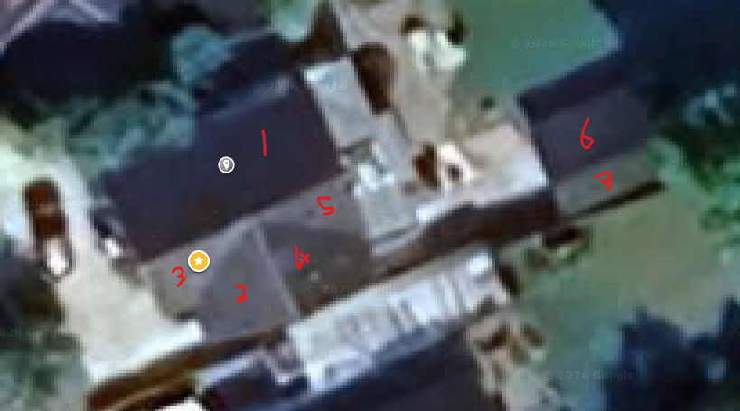
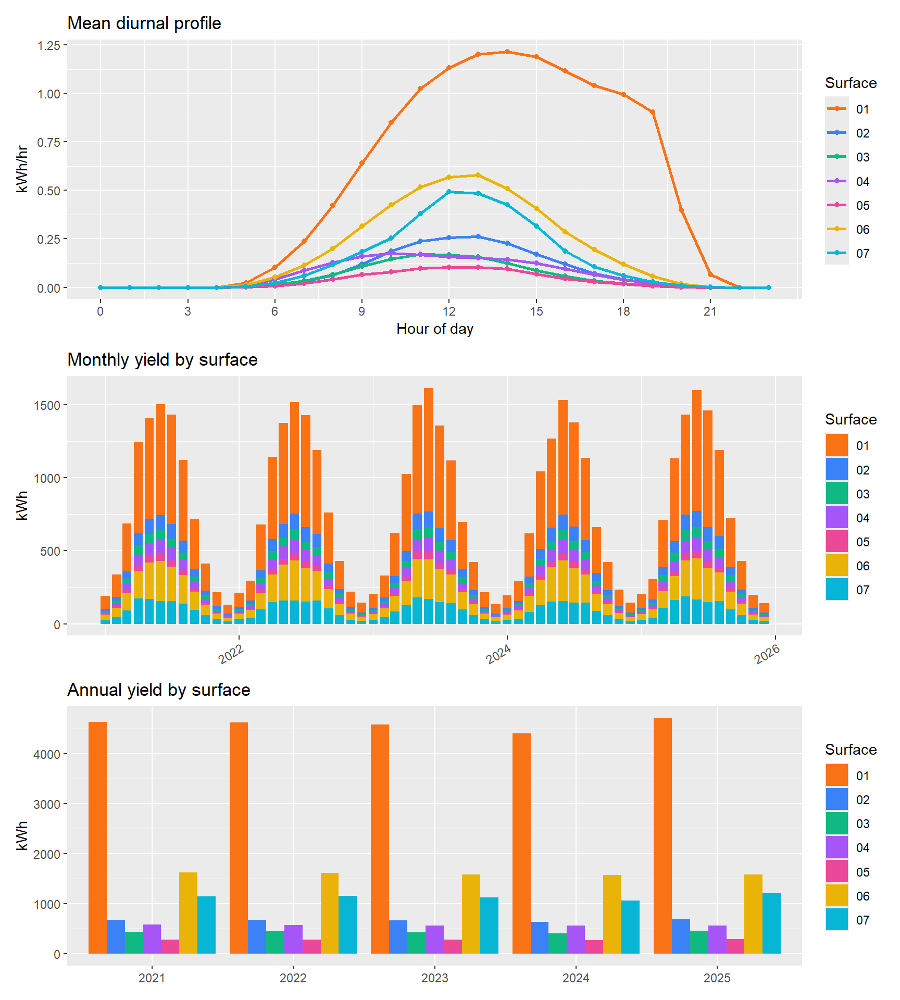

Total estimated yield averages 9,304 kWh/year across all surfaces.

Yield profiles
PAL <-c("#f97316","#3b82f6","#10b981","#a855f7","#ec4899","#eab308","#06b6d4")p_hour <- all_banks |>mutate(hour =hour(date)) |>group_by(hour, bank) |>summarise(kwh =mean(kwh_bank, na.rm =TRUE), .groups ="drop") |>ggplot(aes(hour, kwh, colour = bank)) +geom_line(linewidth =0.9) +geom_point(size =1.4) +scale_colour_manual(values = PAL, name ="Surface") +scale_x_continuous(breaks =seq(0, 23, 3)) +labs(title ="Mean diurnal profile", x ="Hour of day", y ="kWh/hr")p_month <- all_banks |>mutate(month =floor_date(date, "month")) |>group_by(month, bank) |>summarise(kwh =sum(kwh_bank, na.rm =TRUE), .groups ="drop") |>ggplot(aes(month, kwh, fill = bank)) +geom_col(width =25*24*3600) +scale_fill_manual(values = PAL, name ="Surface") +labs(title ="Monthly yield by surface", x =NULL, y ="kWh") +theme(axis.text.x =element_text(angle =30, hjust =1))p_annual <- all_banks |>mutate(year =year(date)) |>group_by(year, bank) |>summarise(kwh =sum(kwh_bank, na.rm =TRUE), .groups ="drop") |>ggplot(aes(factor(year), kwh, fill = bank)) +geom_col(position ="dodge") +scale_fill_manual(values = PAL, name ="Surface") +labs(title ="Annual yield by surface", x =NULL, y ="kWh")p_hour / p_month / p_annual

Method
Direct radiation is attenuated by the LiDAR-derived shading fraction per month and hour, then combined with isotropic diffuse and ground-reflected radiation on the tilted plane. Cell temperature derating follows the NOCT model; panel area and efficiency defaults are 1.6 m² and 15.3%. Surfaces without a user-specified aspect or slope take their values from the DSM terrain derivatives at the surface point.